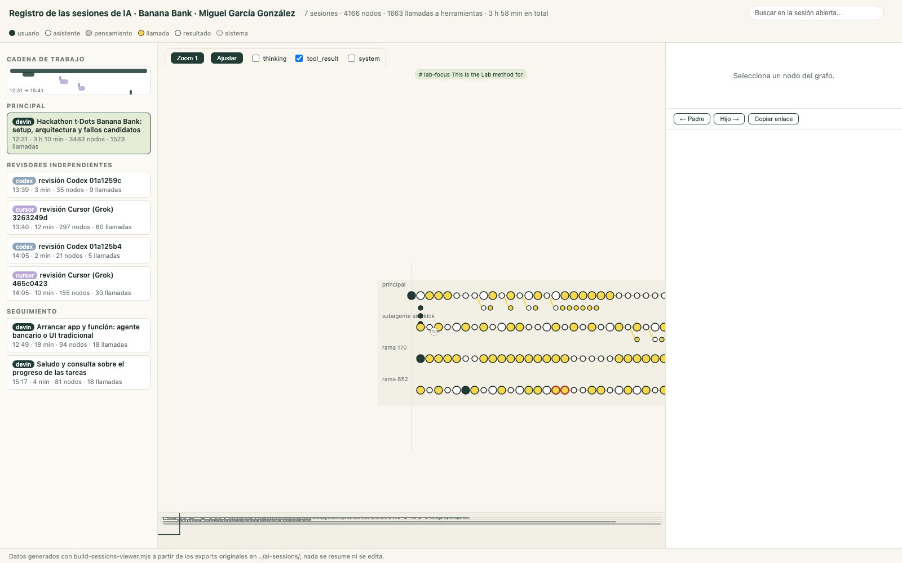

submission/README.md · explicación completasubmission/evidencias/ · antes, después, revisionessubmission/ai-sessions/ · sesiones de IA completassubmission/ai-sessions-viewer/ · visor interactivo de las sesionesnpm ci · npm run setup · npm run dev